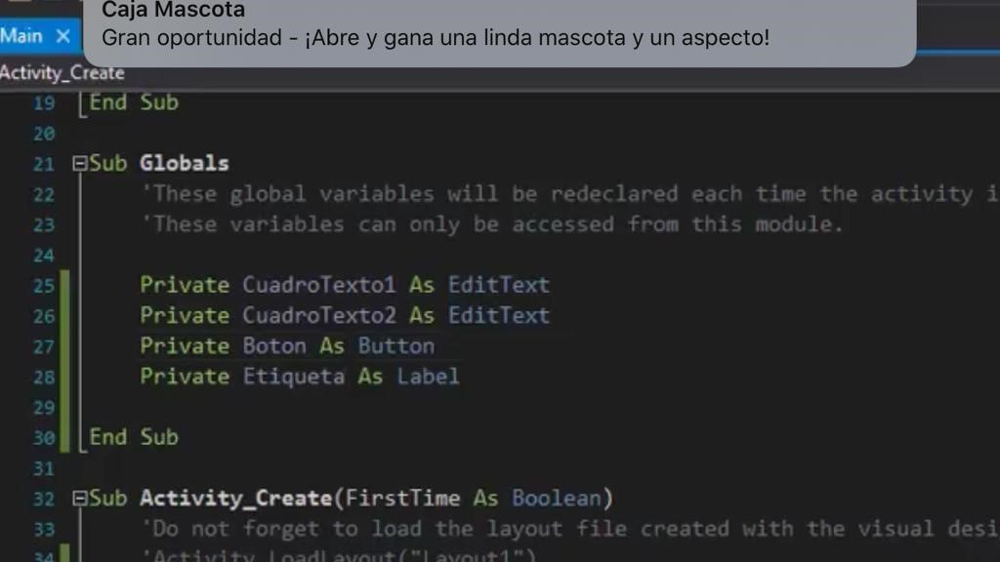
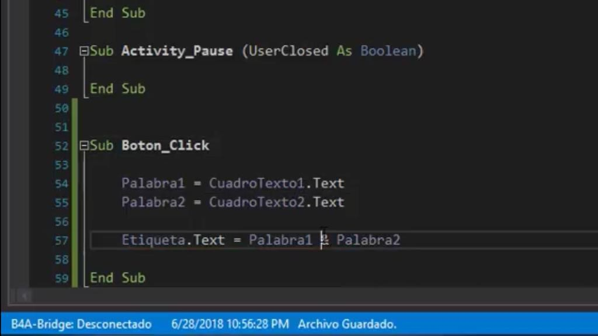

Manual B4A

Sentencia Condicional IF
La instrucción o sentencia IF, controla el flujo de ejecución del programa. Dependiendo de una condición, ejecuta una secuencia de instrucciones o no las ejecuta. El resultado
podrá ser verdadero o falso. Solo si es verdadero se ejecuta la instrucción.
A la instrucción IF se le puede agregar una clausula ELSE, que permiten ejecutar una
instrucción o un bloque de instrucciones en el caso de que la condición no cumpla.

Ejemplo De Cómo Usar El IF:
Para iniciar la sentencia se usa IF Número > 1 (condicional se refiere a que si mi número es mayor a 1 entonces es positivo. Después de hacer la etiqueta (etiqueta. Text = Número (asignándole un número). Cuando le asignamos
el número 0 o 1 al cuadro de texto y le presionamos al botón que le hemos llamado (validar) en la etiqueta no nos marca nada, lo cual indica que no es mayor el número que 1, si le asignamos el número 2 etc. Me mostrara el número
en la etiqueta. La otra parte también igual de importante de IF es ELSE esto sirve como “Sino". ElSE puede referirse a: (si no),un término utilizado en programación; El condicional ELSE, es una estructura de control, que nos permiten
tomar ciertas decisiones al interior de nuestro algoritmo, es decir, nos permiten determinar qué acciones tomar dada o no cierta condición, por ejemplo, determinar si la contraseña ingresada por el usuario, es válida o no.
Otro modo de trabajar es editar la etiqueta como: Etiqueta. Text = “el número es positivo:” & número Esto
donde muestra el texto y el número es negativo o si es positivo.
Sentencia Select “Switch”
Select Case en Visual Basic equivale a la introducción Switch de otros lenguajes. La expresión a evaluar puede ser un
valor numérico o una cadena de texto. Sólo se puede evaluar una expresión y no múltiples expresiones.
En los lenguajes de programación, Switch Case o Switch Statement, es un tipo de mecanismo de control de selección utilizada para permitir
que el valor de una variable o expresión cambie el flujo de control de la ejecución del programa mediante búsqueda y mapa.
Para utilizar Select se necesita modificar el paquete.
Después de haber modificado el paquete se necesita poner SELECT en la Aplicación Label.
Esto sirve para enlazar el diseño de nuestro código ya que es muy necesario hacerlo.
Para seguir enlazando necesitamos dar (Dim Etiqueta As Label).
Select se usa para evaluar y dependiendo del valor te dará la repuesta correcta. Select Texto (es el inicio), End Select (es el final).
Para ver los resultados de Select se necesita que ingresar una letra (en el cuadro de texto).
Para eso necesitamos asignar un Texto = CuadroTexto.Text Case “a” (es el caso de la letra a)
En este caso si le colocas la letra i, no pasara nada. Pero si le coloco la letra A te dará lo que le hayas puesto para que te
mostrara. Y así sucesivamente se puede seguir programando. Hay otra situación que se puede hacer en lugar al usar
letras otras letras que no están registradas en la aplicación. Case Else Etiqueta.Text = “Otra letra”
No solo se pude usar letras o palabras sino también se pueden colocar números. Ejemplo:

Sentencia Bucles “FOR”
En general, un bucle es una estructura de control que repite un bloque de instrucciones.
Un Bucle For es un
bloque de un número predeterminado de veces. El bloque de introducciones que se repite se suele llamar
cuerpo del bucle y cada repetición se suele llamar lite ración.
La sintaxis de un Bucle For es la siguiente: for variable in elemento iterable (lista, cadena, range, etc.): cuerpo del bucle
No es necesario definir la variable de control antes de bucle, aunque se pueda utilizar como variable de control una
variable ya define en el programa. El cuerpo del Bucle se ejecuta tantas veces como elementos tenga el
elemento recurrible (elementos de una lista o de un range), características de una cadena. Ejemplo:
print("Comienzo") for i in [0, 1, 2]: print("Hola ", end="") print() print("Final") Comienzo Hola Hola Hola Final.
Pude ver la ejecución paso a paso de este programa utilizando los iconos de avance y
retroceso situados abajo a la derecha.
Si la lista está vacía, el Bucle no se ejecutará ninguna vez.
Ejemplo: print("Comienzo") for i in []: print("Hola ", end="") print() print("Final") Comienzo Final
Puede ver la ejecución paso a paso de este programa utilizando los iconos de avance y retroceso situados abajo a la derecha.
Se ejecuta la primera introducción del programa.
En este caso, imprime el párrafo de comienzo.
En este caso,
la variable de control es i y toma el valor 1.
for i in [1, 1, 1]: print ("Hola ", end="") print () print("Final")
La variable de control toma el segundo valor de la lista.
Existe una manera más rápida de trabajar,
en lugar de poner
Log (1)
Log (2)
Se hace lo siguiente:
Programacion orientada a eventos
Para entender la programación dirigida por eventos, podemos oponerla a lo que no es: mientras en la programación
secuencial (o estructurada) es el programador el que define cuál va a ser el flujo del programa, en la programación
dirigida por eventos será el propio usuario o lo que sea que esté accionando el programa, el que dirija el flujo del programa.
Aunque en la programación secuencial puede haber intervención de un agente externo al programa, estas intervenciones
ocurrirán cuando el programador lo haya determinado, y no en cualquier momento como puede ser en el caso de la
programación dirigida por eventos.
El creador de un programa dirigido por eventos debe definir los eventos qué manejarán
su programa y las acciones que se realizarán al producirse cada uno de ellos, lo que se conoce como el administrador de evento.
Los eventos soportados estarán determinados por el lenguaje de programación utilizado, por el sistema operativo e
incluso por eventos creados por el mismo programador. Esto se hace para que se carguen los controles e variables.
En la programación dirigida por eventos, al comenzar la ejecución del programa se llevarán a cabo las inicializaciones
y demás código inicial y a continuación el programa quedará bloqueado hasta que se produzca algún evento.
Aquí es para hacer un código que va realizado con la ejecución de un evento.
El evento es click.
Cuando alguno de los eventos esperados por el programa tenga lugar, el programa pasará a ejecutar el
código del correspondiente administrador de evento. También existe otra manera de evento diferente botón.
Por ejemplo, si el evento consiste en qué el usuario ha hecho clic en el botón de play de un reproductor de películas,
se ejecutará el código del administrador de evento, que será el que haga que la película se muestre por pantalla.
Cadenas,Concatenar
La concatenación o conduplicación es, en general, el acto de unir o enlazar cosas. ... También
se pueden concatenar dos cadenas de caracteres o un carácter con una cadena para formar una
cadena de mayor tamaño. Algunos lenguajes formales. Enlace químico figuras retóricas.
Para ver el diseño se necesita hacer:


Esto te mostrara lo que todo lo que quieras.Lo que también necesitas poner el valor de las variables, como lo siguientes:

Conocer el valor de lo que le indicas
Asignar un texto a la etiqueta.
Label
El control Label. El componente Label es el que nos permite incluir palabras, letras o frases en la pantalla (form)
de forma visual, no es lo mismo que introducir un texto, sino que hablamos de algún texto que queremos que
aparezca en la pantalla, con si de un rotulo o mensaje se tratara.
Por ejemplo, para mostrar el texto "Hola"
agrega un label al formulario, coloca un Botón, hace doble click en el mismo, escribe Label1 y presiona él ".",
Visual Basic te desplegará la lista de propiedades y métodos del Label1.
Label es una pequeña etiqueta.
El control Label, sirve principalmente, para mostrar información, por ejemplo, exhibir un título o un subtítulo.
Label tiene propiedades importantes como las siguientes:
• Name: por default es Label1, Label2, Label3 etc., según se vayan agregando Labels, pero debemos cambiarlo a un Name que nos oriente,
para reconocerlo en el código.
Ejemplo el Label del ejemplo anterior, podría llamarse LblTítulo, Indicándonos que ese Label lleva un título.
• Back Color: para cambiar color de fondo
• Fore Color: para cambiar color de letra
• Font: para modificar el tamaño, tipo y estilo de la letra
• Auto size: Si está en True no nos permitirá modificar el tamaño del Label más allá del espacio que ocupa el texto.
• Border Style: Permite cambiar el borde del Label.
• Text: Para escribir el texto visible en el Label.
• Text Align: Para alinear el texto visible a la izquierda, derecha, arriba, abajo o al centro del Label.
• Image: Para insertar imagen en el Label.
Edit text
EditText se encarga del ingreso de información.
Se necesita estar visible para que se pueda ver el control,
necesitas escribir lo que quiera hacer en el Activity, y te mostrara las propiedades. También se puedan colocar números.
Tiene varios eventos como:
EnterPressed
FocusChanged
Se necesita tener vinculados los códigos para poder usar el FocusChanged.
Button
El control Button o botón es de mucha utilidad, pues a través de él, podemos dar órdenes, o sea, sirve como
comando, por eso en las primeras versiones de Visual Basic se llamaba Command Button o botón de comando.
En el siguiente ejercicio usaremos un botón para que muestre un mensaje.
El control Button de Windows Forms
permite al usuario hacer clic en él para llevar a cabo una acción. Al hacer clic en el botón, parece como si se
hubiera presionado y soltado.
Siempre que el usuario hace clic en un botón, se invoca el controlador de eventos
Click. Coloque el código en el controlador de eventos Click para realizar cualquier acción que elija.
El texto
que se muestra en el botón está contenido en la propiedad Text. Si el texto supera el ancho del botón, se ajustará
a la línea siguiente. Sin embargo, se recortará si el control no puede dar cabida a su alto total.
Para obtener más información, vea Cómo: establecer el texto mostrado por un control de Windows Forms. La propiedad Text puede
contener una tecla de acceso, que permite al usuario "hacer clic" en el control presionando la tecla ALT con
la tecla de acceso. Para obtener más información, consulte Cómo: crear claves de acceso para controles de Windows
Forms. La apariencia del texto se controla mediante la propiedad Font y la propiedad TextAlign.
El control Button también puede mostrar imágenes mediante las propiedades Image y ImageList. Para obtener más información, vea Cómo:
establecer la imagen mostrada por un Control Windows Forms.
Esto hace que cambien el color al presionar o dejarlo presionado.
El ButtonCorto_Click es para que cambie el texto.
El ButtonCorto_LongClick es páralo cambio de texto y definir el color del texto.